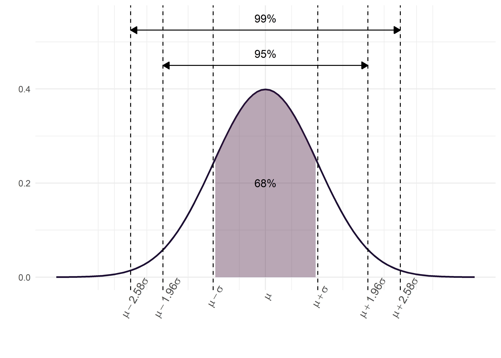
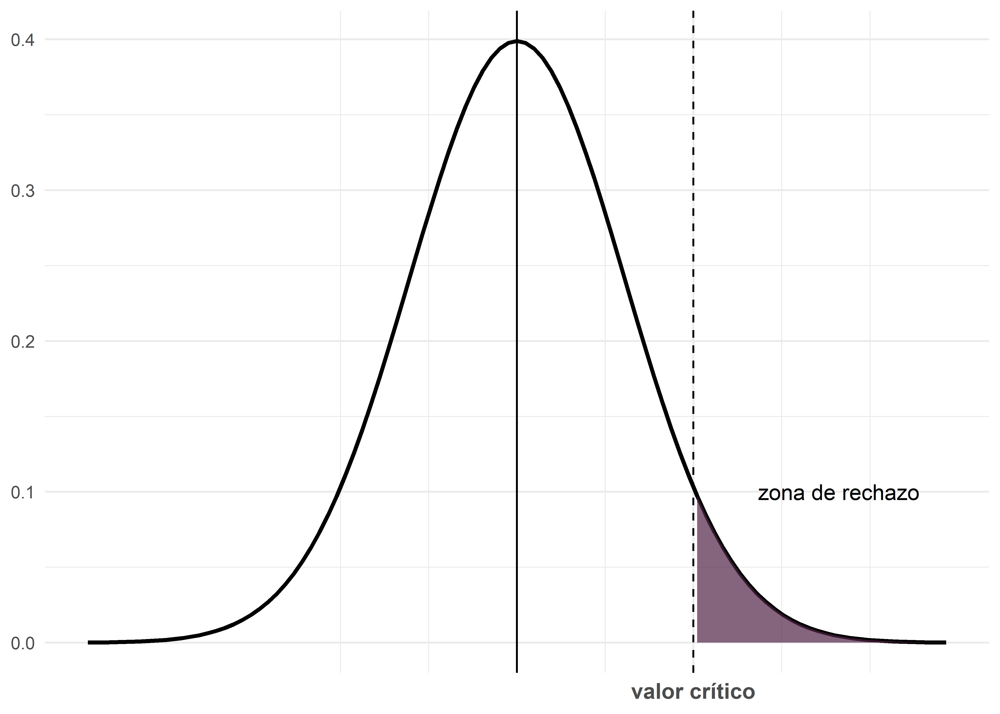
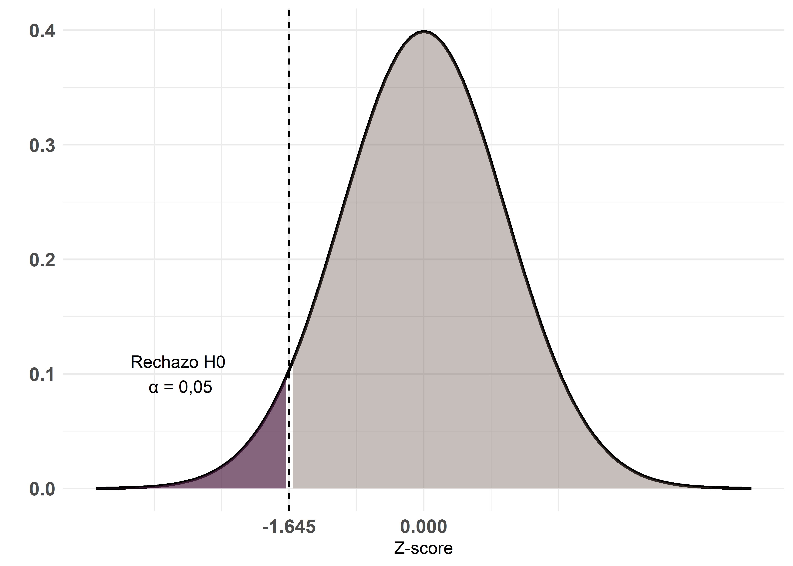
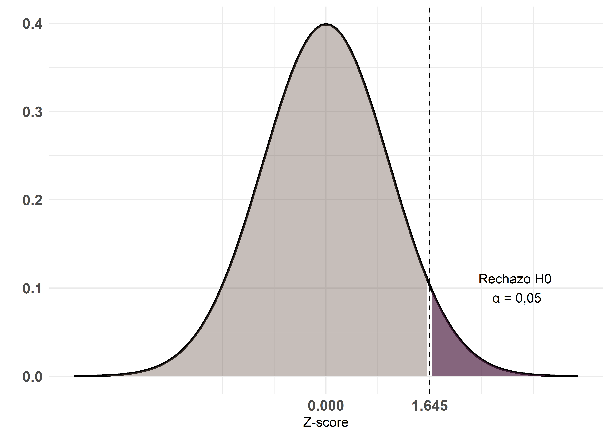
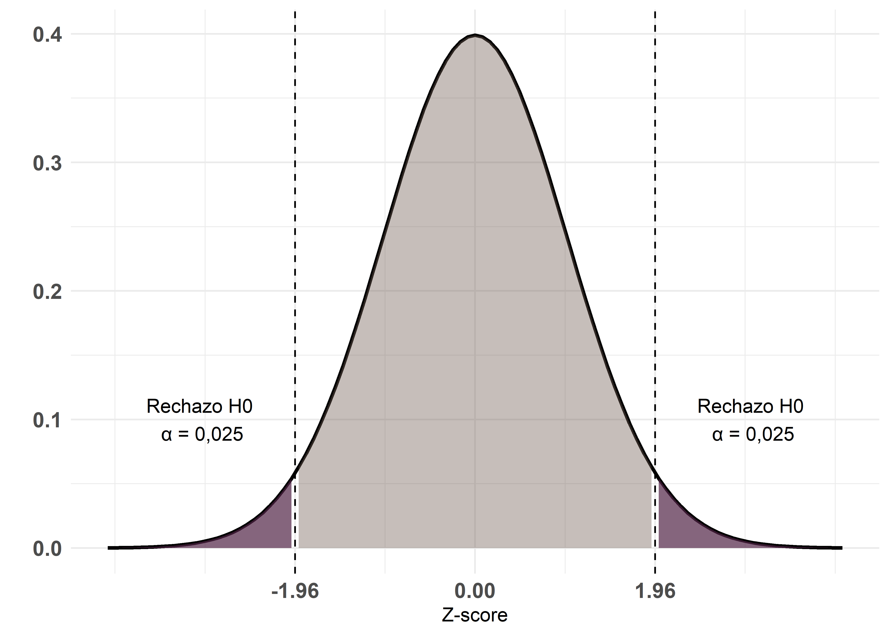

Introducción a la inferencia estadística
Andrea Silva ![]()
Tamara Ricardo

Fundamentos
La estadística inferencial es la rama de la estadística que permite extraer conclusiones sobre una población a partir de una muestra de datos. Este proceso se sustenta en dos procedimientos principales: la estimación y la prueba de hipótesis.
La población se define como el conjunto completo de individuos u observaciones de interés, mientras que la muestra es el subconjunto representativo de esa población, diseñado para reflejar sus características fundamentales.
Para describir la población se utilizan parámetros, valores numéricos como la media poblacional \((\mu)\), mientras que los datos muestrales se resumen con estadísticos, por ejemplo, la media muestral \((\bar{x})\).

Estimación de parámetros
La estimación consiste en utilizar información muestral para inferir el valor de un parámetro poblacional. Existen dos tipos principales:
Estimación puntual: proporciona un único valor estimado. Por ejemplo, la media muestral (\(\bar{x}\)) como estimador de la media poblacional (\(\mu\)).
Estimación por intervalo de confianza: proporciona un rango de valores plausibles para el parámetro, con un nivel de confianza determinado.
Intervalos de confianza
Aunque los intervalos de confianza son procedimientos inferenciales, están estrechamente ligados a la estadística descriptiva. Un intervalo de confianza indica un rango de valores dentro del cual se espera que se ubique el verdadero valor del parámetro poblacional, con una cierta probabilidad conocida como nivel de confianza.
La forma general de un IC es:
\[ IC = estimador~puntual \pm (coeficiente~de~confiabilidad) * (error~ estandar) \]
Estimador puntual
Para la media poblacional (\(\mu\)): se utiliza la media muestral \(\bar{x}\).
Para una proporción poblacional (\(p\)): se utiliza la proporción muestral \(\hat{p}\).
Coeficiente de confiabilidad
Corresponde al valor asociado al nivel de confianza deseado (por ejemplo, 90%, 95%, 99%). Se denota como \(1 - \alpha\), siendo \(\alpha\) el nivel de significación (probabilidad de error tipo I). Por ejemplo, para un 95% de confianza, \(\alpha = 0.05\) y el coeficiente es \(Z_{1 - \alpha/2} \approx 1.96\).
Error estándar (SE)
Representa la variabilidad de la distribución muestral y depende del parámetro.
Por ejemplo, para la media se calcula:
\[ SE = \frac{\sigma}{\sqrt{n}} \]
Donde \(\sigma\) es la desviación estándar poblacional y \(n\) el tamaño de la muestra.
Mientras que para una proporción se calcula como:
\[ SE = \sqrt{\frac{\hat{p}(1 - \hat{p})}{n}} \]
Teorema del límite central
El Teorema del Límite Central (TLC) establece que, para muestras suficientemente grandes, la distribución muestral de la media (\(\bar{x}\)) es aproximadamente normal, con media \(\mu\) y varianza \(\sigma^2/n\). Esto permite utilizar la distribución normal estándar para calcular probabilidades e intervalos:
\[ Z = \frac{\bar{x}-\mu}{\sigma} \]
Dado esto, se sabe que en una distribución normal:
Aproximadamente el 68% de los valores se encuentran entre \(\mu \pm \sigma\).
Aproximadamente el 95% entre \(\mu \pm 2\sigma\).
Aproximadamente el 99% entre \(\mu \pm 3\sigma\).
El siguiente gráfico ilustra lo explicado anteriormente:
Un IC al 95% no significa que haya un 95% de probabilidad de que el parámetro esté dentro de un único intervalo calculado. Lo correcto es decir que, si repitiéramos muchas veces el procedimiento muestral, el 95% de los intervalos construidos de esa forma contendrían el verdadero valor del parámetro.
¿Cómo se interpreta un IC?
Si repitiéramos el muestreo muchas veces, tomando muestras del mismo tamaño y construyendo un IC en cada caso, aproximadamente el \(100 * (1 − \alpha)\%\) de esos intervalos contendrían el valor real del parámetro. Por ejemplo, un IC al 95% implica que, en el largo plazo, el 95% de los intervalos construidos con este método contendrán el valor verdadero.
La amplitud del IC está determinada por la precisión de la estimación, que se calcula como el producto entre el coeficiente de confiabilidad (vinculado al nivel de confianza) y el error estándar. La fórmula general para construir un intervalo de confianza es:
\[ IC = estimador~puntual \pm (coeficiente~de~confiabilidad) * (error~ estandar) \]
En el caso de la media:
Aumento del nivel de confianza: Si se incrementa el nivel de confianza (por ejemplo, del 95% al 99%), el coeficiente de confiabilidad aumenta (por ejemplo, de 1.96 a 2.58), lo que produce un intervalo más amplio.
-
Reducción del error estándar: Si se mantiene fijo el nivel de confianza, reducir la amplitud del IC requiere disminuir el error estándar. Para la media, este se calcula como:
\[ SE = \frac{\sigma}{\sqrt{n}} \]
y considerando que \(\sigma\) es constante, la única forma de disminuir el error estándar es aumentando el tamaño muestral (\(n\)).
El cálculo de los intervalos de confianza se basa en las distribuciones muestrales de los estimadores y en el error estándar correspondiente. Aunque las fórmulas pueden parecer complejas, los paquetes estadísticos (como R) permiten calcularlos de forma automática. Lo esencial es comprender de qué depende la amplitud del IC (nivel de confianza, error estándar y tamaño de la muestra) y cómo cada uno de estos factores influye en la precisión de la estimación.
Pruebas de Hipótesis
Las pruebas de hipótesis (también conocidas como tests o contrastes de hipótesis) permiten tomar decisiones sobre una población a partir de los datos obtenidos de una muestra.
Antes de profundizar en los aspectos estadísticos, es importante distinguir entre dos tipos de hipótesis:
Hipótesis de investigación: representan la pregunta o problema que motiva el estudio.
Hipótesis estadística: es la formulación que puede ser evaluada mediante técnicas de estadística inferencial.
El contraste de hipótesis se basa en la comparación de dos hipótesis estadísticas:
Hipótesis nula (\(H_0\)): sostiene que no existen diferencias entre los grupos comparados (por ejemplo, \(\mu = \mu_0\)); por lo tanto, cualquier diferencia observada se debe únicamente al azar.
Hipótesis alternativa (\(H_1\)): plantea que existen diferencias entre grupos (por ejemplo, \(\mu \neq \mu_0,~ \mu > \mu_0~ ó~ \mu < \mu_0\)). Generalmente es la formulación matemática de nuestra hipótesis de investigación y es complementaria de \(H_0\). No se acepta ni se refuta de manera directa.
El método estadístico nos permite cuantificar la diferencia entre grupos bajo el supuesto de que, si repitiésemos el experimento infinitas veces y obtuviésemos todas las muestras posibles del mismo tamaño, las diferencias entre grupos “iguales” seguirían una distribución muestral teórica. A partir de esta distribución, se define un valor límite (por ejemplo, que abarca el 95% o el 99% de las diferencias esperadas).
Si la diferencia observada excede ese límite, se considera demasiado grande para ser atribuida al azar y se rechaza la hipótesis nula (\(H_0\)).
Si la diferencia cae dentro del rango esperado, no se rechaza \(H_0\), ya que podría deberse al azar. En estos casos, se concluye que los grupos “no son diferentes”, lo que no implica que “sean iguales”, ya que la variabilidad muestral impide demostrar una igualdad exacta.
Los contrastes de hipótesis suelen realizarse suponiendo que se conoce a priori la distribución de la población y que se extrae una muestra aleatoria de la misma.
Estadístico de prueba
Es el valor calculado a partir de los datos muestrales que se utiliza para tomar la decisión respecto de \(H_0\). Cada situación tiene un estadístico adecuado cuya magnitud, al compararse con su distribución teórica permite determinar si las diferencias observadas son atribuibles al azar. Por ejemplo:
Para variables categóricas se utiliza el estadístico chi-cuadrado (\(\chi^2\)).
Para variables numéricas, se emplean distribuciones como la normal (\(Z\)) o t de Student (\(t\)).
Errores
En el razonamiento de los contrastes de hipótesis existen dos posibles errores:
Error tipo I (\(\alpha\)): ocurre cuando se rechaza la hipótesis nula siendo esta verdadera. Es decir, se concluye erróneamente que existe una diferencia cuando en realidad no la hay. Para minimizar este riesgo, se elige un \(\alpha\) pequeño (por ejemplo, 0,01; 0,05 o 0,10).
Error tipo II (\(\beta\)): ocurre cuando no se rechaza la hipótesis nula siendo esta falsa, es decir, se falla en detectar una diferencia real. El valor de \(\beta\) depende del valor real del parámetro, y suele ser mayor que \(\alpha\); sin embargo, no se conoce con certeza una vez realizada la prueba.
Una vez finalizado el análisis, no es posible saber si se ha cometido alguno de estos errores, ya que el verdadero estado de la población es desconocido. Sin embargo, si se ha utilizado un \(\alpha\) bajo, podemos tener mayor confianza en que, si se rechazó \(H_0\), el error tipo I es poco probable.
Nivel de significancia
El nivel de significación (\(\alpha\)) representa la probabilidad de cometer un error tipo I, es decir, rechazar \(H_0\) cuando en realidad es verdadera. Se define antes del análisis (comúnmente 0,05 o 0,01) y determina el límite entre la región de no rechazo y la región crítica.
Región crítica
Se denomina región crítica (o región de rechazo) al conjunto de valores del estadístico de prueba que llevan al rechazo de \(H_0\). Esta región se define según el nivel de significación (\(\alpha\)), e incluye los valores extremos del estadístico que serían poco probables si \(H_0\) fuera cierta. En una representación gráfica, la región crítica se ubica en una o ambas colas de la distribución, dependiendo del tipo de prueba

La regla de decisión es la siguiente:
Si el valor calculado del estadístico cae dentro de la región crítica, se rechaza \(H_0\) y se concluye que las diferencias observadas son estadísticamente significativas.
Si el valor no cae en la región crítica, no se rechaza \(H_0\). En ese caso, las diferencias observadas pueden explicarse por el azar, y no se consideran estadísticamente significativas.
Valor crítico
El valor crítico o p-valor es la probabilidad de obtener un resultado igual o más extremo que el observado, bajo la suposición de que \(H_0\) es verdadera. Representa el menor nivel de \(\alpha\) para el cual puede rechazarse \(H_0\).
Si el valor p es muy pequeño, indica que el resultado observado sería poco probable si \(H_0\) fuera cierta, por lo tanto, se rechaza la hipótesis nula.
La regla práctica es:
Si \(p \leq \alpha\), se rechaza \(H_0\).
Si \(p > \alpha\), no se rechaza \(H_0\).
Tipos de contraste
Los contrastes de hipótesis se clasifican según la forma de la hipótesis alternativa (\(H_1\)). Esta clasificación determina si la prueba es unilateral (de cola izquierda o derecha) o bilateral (de dos colas).
Test de cola izquierda
La hipótesis alternativa plantea que la media del primer grupo es significativamente menor que la del segundo:
\[ H_1: \mu_1 < \mu_2 \]
La región crítica se encuentra en el extremo izquierdo de la distribución. Todo el área crítica tiene un tamaño \(\alpha\) con un valor crítico de \(-1,645\).

Test de cola derecha
La hipótesis alternativa establece que la media del primer grupo es significativamente mayor que la del segundo:
\[ H_1: \mu_1 > \mu_2 \]
La región crítica se concentra en el extremo derecho de la distribución y toda el área crítica tiene un tamaño \(\alpha\) con un valor crítico de \(1,645\).

Pruebas bilaterales
La hipótesis alternativa afirma que existen diferencias entre los grupos, sin especificar la dirección:
\[ H_1: \mu_1 \neq \mu_2 \]
La región crítica se divide entre ambos extremos de la distribución, con valores críticos de \(\pm 1,96\). El nivel de significación total (\(\alpha\)) se reparte en partes iguales entre las dos colas (\(\alpha/2\) en cada una), lo que implica un 2,5% de probabilidad en cada cola si \(H_0\) es verdadera.

Potencia estadística
La potencia estadística es la probabilidad de rechazar la hipótesis nula (\(H_0\)) cuando esta es falsa, es decir, de detectar un efecto real. Se calcula como \(1 - \beta\), donde \(\beta\) es la probabilidad de cometer un error de tipo II. Aumenta con el tamaño muestral, disminuye con la varianza, y depende de la magnitud del efecto que se desea detectar.
Mientras que \(\alpha\) se fija antes del análisis, \(\beta\) varía según el valor real del parámetro. La potencia se considera adecuada cuando alcanza al menos el 80%, lo que implica un 20% de riesgo de no detectar una diferencia real.
No es posible reducir simultáneamente \(\alpha\) y \(\beta\), por lo que el diseño de una prueba debe buscar un equilibrio entre ambos errores. La potencia proporciona un control adicional en la toma de decisiones, ya que no basta con obtener un valor p pequeño: también se requiere una potencia suficiente para respaldar la conclusión.
La siguiente tabla resume las posibles situaciones en un contraste de hipótesis:
| No rechazar H0 | Rechazar H0 | |
|---|---|---|
| H0 es cierta | Correcto (1-α) | Error tipo I (α) |
| H0 es falsa | Error tipo II (β) | Correcto (1-β) |
Aplicaciones e Interpretación
La inferencia estadística permite responder preguntas de investigación tales como:
¿Es significativa la diferencia entre dos medias?
¿Existe una relación entre dos variables?
¿Cómo se distribuyen los datos respecto a un parámetro de interés?
Al aplicar estos métodos, es crucial tener en cuenta la calidad y representatividad de la muestra, así como la validez de las asunciones subyacentes (normalidad, homogeneidad de varianzas, etc.).
Este apunte sintetiza los conceptos esenciales y las herramientas básicas para llevar a cabo un análisis inferencial, que sirve de base para la interpretación de modelos y resultados en análisis cuantitativos. Quienes necesiten profundizar más en los temas, les recomendamos consultar las siguientes fuentes:
Manual de Epidemiología: Fundamentos, Métodos y Aplicaciones (Instituto Nacional de Epidemiología 2015): Capítulo 3.
Estadística 12A Edición (Triola 2018): Capítulos 8 y 9.
Referencias
Agresti, Alan. 2015. Foundations of Linear and Generalized Linear Models. Wiley Series En Probability y Statistics. Hoboken, New Jersey: John Wiley & Sons, Inc.
Daniel, Wayne W. 2002. Bioestadística: Base para el análisis de las ciencias de la salud. 4.ª ed. Limusa Wiley.
Glantz, S. 2006. Bioestadística. 6.ª ed. Mexico: McGraw Hill.
Instituto Nacional de Epidemiología. 2015. MANUAL DE EPIDEMIOLOGÍA: FUNDAMENTOS, MÉTODOS Y APLICACIONES. Edición 2015.
Ríus Díaz, Francisca, Francisco Javier Barón Lopez, Elisa Sánchez Font, y Luis Parras Guijosa. 2012. «Bioestadística: Métodos y Aplicaciones». http://virtual.uptc.edu.co/ova/estadistica/docs/libros/ftp.bioestadistica.uma.es/libro/.
Triola, Mario F. 2018. ESTADÍSTICA Decimosegunda Edicion. Pearson Educación de México, SA de CV.